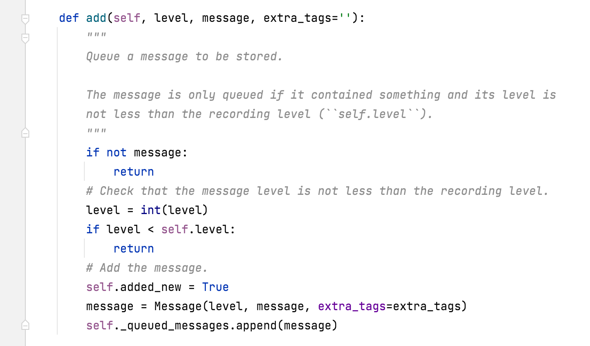

1.message组件
1.前戏
message组件的应用场景
HTTP请求是不稳定的短链接
如果在重定向到另外一个url时希 望返回重定向之前的请求相关的数据

message组件在django中是一个app
3.应用
3.1 配置
进行如下配置
# MESSAGE_STORAGE = 'django.contrib.messages.storage.fallback.FallbackStorage'
# MESSAGE_STORAGE = 'django.contrib.messages.storage.cookie.CookieStorage'
MESSAGE_STORAGE = 'django.contrib.messages.storage.session.SessionStorage'
INSTALLED_APPS = [
# 'django.contrib.admin',
# 'django.contrib.auth',
# 'django.contrib.contenttypes',
# 'django.contrib.sessions',
'django.contrib.messages',
'django.contrib.staticfiles',
"web.apps.WebConfig"
]
MIDDLEWARE = [
'django.middleware.security.SecurityMiddleware',
'django.contrib.sessions.middleware.SessionMiddleware',
'django.middleware.common.CommonMiddleware',
'django.middleware.csrf.CsrfViewMiddleware',
# 'django.contrib.auth.middleware.AuthenticationMiddleware',
'django.contrib.messages.middleware.MessageMiddleware',
'django.middleware.clickjacking.XFrameOptionsMiddleware',
'utils.md.AuthMiddleware'
]
TEMPLATES = [
{
'BACKEND': 'django.template.backends.django.DjangoTemplates',
'DIRS': [],
'APP_DIRS': True,
'OPTIONS': {
'context_processors': [
'django.template.context_processors.debug',
'django.template.context_processors.request',
# 'django.contrib.auth.context_processors.auth',
'django.contrib.messages.context_processors.messages',
],
},
},
]
第一种方式
A请求：
def my_order_cancel(request,pk):
messages.add_message(request,messages.SUCCESS,'删除成功1')
messages.add_message(request,messages.SUCCESS,'删除成功2')
return redirect('my_order_list')
B请求：
def f2(request):
from django.contrib.messages.api import get_messages
messages = get_messages(request)
for obj in messages:
print(obj.message)
第二种方式
A请求：
def my_order_cancel(request,pk):
messages.add_message(request,messages.SUCCESS,'删除成功1')
messages.add_message(request,messages.SUCCESS,'删除成功2')
return redirect('my_order_list')
B请求：通过HTML页面
<ul>
{% for obj in messages %}
<li>{{ obj.message }}</li>
{% endfor %}
</ul>
4.源码分析
message是一个对象, 封装特性
add_message 源代码
def add_message(request, level, message, extra_tags='', fail_silently=False):
"""
Attempt to add a message to the request using the 'messages' app.
"""
try:
messages = request._messages
except AttributeError:
if not hasattr(request, 'META'):
raise TypeError(
"add_message() argument must be an HttpRequest object, not "
"'%s'." % request.__class__.__name__
)
if not fail_silently:
raise MessageFailure(
'You cannot add messages without installing '
'django.contrib.messages.middleware.MessageMiddleware'
)
else:
return messages.add(level, message, extra_tags)
关键的两行代码
try:
messages = request._messages
......
else:
return messages.add(level, message, extra_tags)
request._messages 是request对象中的一个成员
由MessageMiddleware中间件设置，
在MessageMiddleware的process_request方法中设置了_messages
 default_storage 是一个类，返回如下内容
default_storage 是一个类，返回如下内容

import_string通过字符串形式找类 SessionStorage
返回一个对象，传入request参数
SessionStorage(request)
将SessionStorage(request)对象在中间件MessageMiddleware中的process_request方法
赋值给了request._messages

此处的messages是一个对象，SessionStorage的对象
是因为配置文件中，设置message存放在session中
在SessionStorage的父类BaseStorage中，存在add方法


请求流程